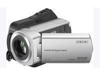

3.1. Pre-producción
Esta etapa consta básicamente en preparar la temática de la que vamos a realizar el video, los objetivos que deseamos alcanzar y los recursos que vamos a utilizar, entre otros.
Es fundamental elegir, amén de un guión y una planificación de las diversas etapas de producción del video, el formato del medio de grabación (características de la video cámara) y el formato en el que vamos a grabar para poder importar el mismo a nuestro ordenador en la etapa de post-producción.
Formatos Actuales de Video Digital (físicos): Mini DV, DVD o mini-DVD, tarjetas de memoria SD, Memory Sticks y discos duros internos. Últimamente, resalta el uso de soportes HDV (Alta definición). Los dos más extendidos son 720p y 1080i (el primero de tipo progresivo y el segundo entrelazado y denominado FULL HD).
HARD DISK y MEMORY STICK

Formatos de Grabación actuales: Existen varios formatos digitales para almacenar videos; entre los más populares tenemos DV, AVI, MOV, MPEG, WMV y Flash Video1. Sin embargo, DV es el más utilizado ya que las videocámaras miniDV son las más comunes en el mercado y utilizan este formato. Es el formato que utilizan la mayoría de los editores para importar por el puerto fireware (IEEE1394).
1AVI: Acrónimo de Audio Video Interlaced (Audio y Vídeo Entrelazados). Es el formato estándar de vídeo digital para Windows. Indica cómo están enlazados el audio y el vídeo, sin especificar qué codec ha sido utilizado.
MOV: Extensión de archivo utiliza el formato QuickTime de Apple.
MPEG: Acrónimo de Moving Picture Experts Group (Grupo de Expertos en Imágenes en Movimiento). Es un sistema de compresión de datos, utilizado preferente con videos, que ofrece tres ventajas fundamentales: gran nivel de compresión, escasa pérdida de calidad y compatibilidad con formatos de video. Ofrece tres niveles de compresión, 1, 2, 3 y 4, los cuales se diferencias por la calidad de la imagen y el ancho de banda necesario para su transmisión.
Jo.R.C.A. 2004 - 2011

Edición de Audio y Video con Software Libre by José Ramón Cerdeira Alonso is licensed under a Creative Commons Reconocimiento-No comercial-Compartir bajo la misma licencia 3.0 España License